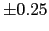

The use of predefined reference segmentations is necessary to
compute the DER given the system hypotheses. The data used in this
chapter all comes from the NIST evaluations, which defined a set
of rules on how the transcription should be made. In the latest
evaluation (NIST Fall Rich Transcription on meetings 2006 Evaluation
Plan, 2006) they were:
- Within a speaker's turn, pauses lasting less than 0.3
seconds are to be considered to belong to that speaker turn.
Pauses with more than 0.3 seconds or in between different speaker
turns are to be considered non-speech. This value was determined
in 2003 by NIST as the minimum duration for a pause that would
indicate an utterance boundary.
- Vocal noises, such as laugh, cough, sneeze, breath and
lipsmack are to be considered non-speech, and take this into
account when considering segment boundaries.
- Although not a rule in creating the transcriptions, it is
worth mentioning again the collar of  seconds to be
considered around each reference segment boundary when comparing
it to the hypothesis in order to account for inexactitudes in
computing the real segment boundary.
Within the NIST evaluation campaigns all data sent out for
development and test was carefully transcribed by hand by the
Linguistic Data Consortium (LDC). Such transcription was usually
done listenning to the channel with the best quality possible
(which usually is the Individual Headphone Channel, IHM, when
available) for each participant, and then the transcriptions are
collapsed into a main reference file for all participants.
Prior to the RT06s evaluation it was under consideration by NIST
and by some of the participants (including ICSI) the use of forced
alignments of the acoustic data. Although in RT06s still hand
alignments were used, it is the intention of NIST to change the
reference transcriptions to be forced alignments in the near
future. The need for such change became strong when areas in
overlap started being scored as part of the main metric for system
performance. In chapter 3.2 a quantitative comparison
is done between forced and hand alignments. In brief, the main
drawbacks found in the hand-aligned references are:
- Transcriptions time inconsistency due to the gap of 1 year
between each of the transcriptions for each evaluation, which
leads to a change in transcription criterions, human transcriber,
transcription tools, etc. Leading to consistent differences
between the reference files to which the systems try to learn
from.
- Inability, at times, to detect short speaker pauses when
these are around 0.3 seconds. This leads to problems for systems
which are trained to this data and which are impeded to determine
when a speaker pause has to be a silence and when it does not.
- Existence of extended durations when labelling the overlap
speech. As seen in chapter 3.2 the average length of
speech in overlap is bigger in the hand-alignments, usually so as
the human transcribers added some arbitrary padding to either side
of some overlap regions, leading to greater overlap errors. Such
difference varies from evaluation to evaluation and was detected
only in RT06s data when overlap became part of the main metric.
- The inability, at times, to identify in the distant
microphones (the ones actually used in the evaluations) some
sounds or artifacts that are heart and transcribed in the IHM
channels (much closer to each speaker's mouth).
It was decided at ICSI that development for the RT06s evaluation
had to be done using forced alignments in order to avoid these
problems. In order to obtain the forced alignment of a meeting
recording a two steps process was followed:
- The human words transcription for each one of the IHM
channels was used to do a forced alignment of the audio in each of
the IHM channels to such transcription, obtaining a time-aligned
word transcription for each speaker with a headset on. To do so,
the ICSI-SRI ASR system (Janin et al., 2006) was used. Experiments
pursued by NIST after the RT06s evaluation
Fiscus, Garofolo, Ajot and Michet (2006) indicated that very similar behaviors
for all participants could be obtained using either ICSI-SRI
transcriptions or LIMSI's ASR system transcriptions.
- The transcriptions from each individual speaker were
collapsed into a single file and the transcription rules were
applied to determine when two words were to be joined into a
single speaker segment or two speaker segments needed to be
created.
By using forced alignments there are also several drawbacks to
point out:
- In the way that these were done, an IHM channel needed to be
provided for each participant in the meetings in order to obtain
that channel's alignment. One meeting in RT05s (named
NIST_20050412-1303) contained a speaker through a telephone
speaker which was not considered, therefore creating a transcript
lacking of some of the data. This could be avoided by using other
channels instead, trying to always select the optimum quality
source.
- Errors in the transcription of the words (which is done so
by human transcribers) propagates into the forced-alignments.
These errors were measured to be much smaller than transcribing
the speaker turns directly.
- Each ASR system does their own systematic errors/decisions
which translate into systematic segmentation issues. These are
thought to be the difference between every ASR forced-alignment
output that can be used. Although such difference is very small,
in order to create good quality transcripts, reducing this
variability, they could be derived from the output of multiple
systems.
All results reported in this thesis were computed using the forced
alignments obtained using the ICSI-SRI ASR system, unless
otherwise stated.
user
2008-12-08